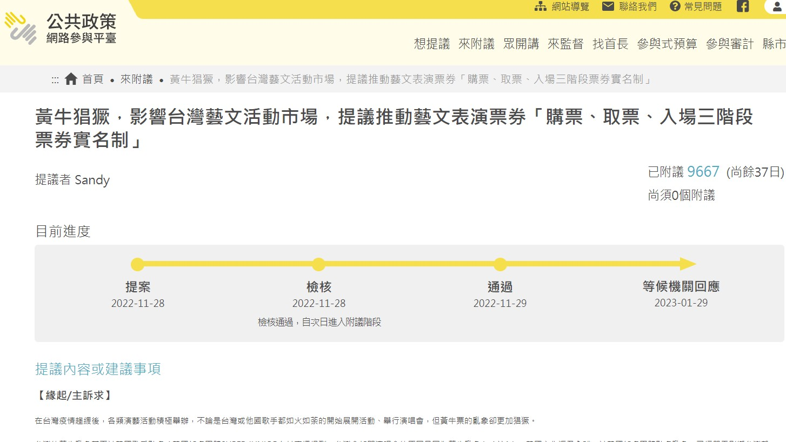

【記者黃家安綜合報導】台灣黃牛票亂象持續已久，近期韓國偶像團體成員更在直播中點名台灣黃牛票猖獗，引起粉絲和民眾廣大討論。為了杜絕黃牛票，屠牛小分隊團隊於公共政策平台提出「購票、取票、入場三階段票券實名制」，並在短短五天內獲得獲得超過五千人連署，顯見社會大眾對於黃牛票問題的重視。

藝文票券三階段實名制提案連署通過，目前在等候機關回應階段。 圖／截自公共政策網路參與平台
提案者Sandy（化名）表示，身為韓團的粉絲，自己也曾搶不到票，再加上時常在粉絲社團中看到黃牛橫行的情形，因此產生提案的想法。屠牛小分隊團隊主張，文化部應在定型化契約中新增持有票券對象的個人資料，並於購票、取票、入場三個階段都進行身分核對，以杜絕黃牛票。屠牛小分隊團隊成員陳小姐（化名）解釋：「實名制可以提高黃牛大量搶票的成本，就算搶到了因為實名制所以在驗票階段也會沒辦法入場，我們是希望可以從購票流程的更前端去改善這件事。」
屠牛小分隊團隊主張應在購票、取票、入場三階段以實名制核對身分。 圖／黃家安攝
曾落入黃牛圈套的民眾陳家儀回想，起初參加音樂祭較不瞭解購票生態，在沒搶到票的情況下，以原價更高的金額購入音樂祭門票，事後才得知加上「手續費」的門票正是黃牛票。另外，陳家儀也觀察到，黃牛會使用「綁賣」的方法，雖以原價販售票券，但必須同時購買其他高單價的商品做為報酬。面對黃牛越來越多元的售票手法，陳小姐認為現行《社會秩序維護法》對黃牛不具嚇阻力，因黃牛潛在利潤遠高於最高罰則，且因只有黃牛票售出後才能開罰，民眾報案時難以舉證，很難將黃牛繩之以法。他認為，現行做法皆無法防止黃牛大量搶票和轉票，必須在源頭增加黃牛搶票的困難，並增加購票後換票的限制，才能有效解決黃牛問題。
「如果能趕快推動三階段實名制，就能趕快來解決這個問題。」立法委員張廖萬堅認為，黃牛票問題關乎台灣藝文產業能否健全發展，因此，政府應積極解決問題。此外，他也支持三階段實名制應盡快推動，但是否效法日本特立專法，及提高販售黃牛票的刑法罰責皆值得各界討論。針對刑法修法，張廖萬堅表示若以刑法規範黃牛，恐讓犯罪構成要件太過寬鬆，導致民眾一不小心就觸法，因此針對不同程度的黃牛行為，也應有不同刑度的罰責。張廖萬堅期望未來採滾動式調整處理黃牛票問題，假使三階段實名制能有效解決問題，就未必需要再立專法或修改刑法。
Sandy期許三階段實名制能顧及各種不同類型的藝文活動。 圖／黃家安攝
陳小姐認為解決黃牛問題有賴購票方和售票方共同努力，其中，團隊建議售票方提供民眾完善的購票和換票服務，也呼籲購票方不應購買黃牛票，破壞整體藝文環境。Sandy提醒：「有些比較小型或剛發展的藝文活動，沒辦法去承擔實名制需要的成本。」他認為政府若要實際執行實名制，也應界定使用時機，以免小型活動因實名制增加的成本而難以舉辦。「寫信給區域立委，或者關心這個議題的立委，都是很好的意見表達方式。」